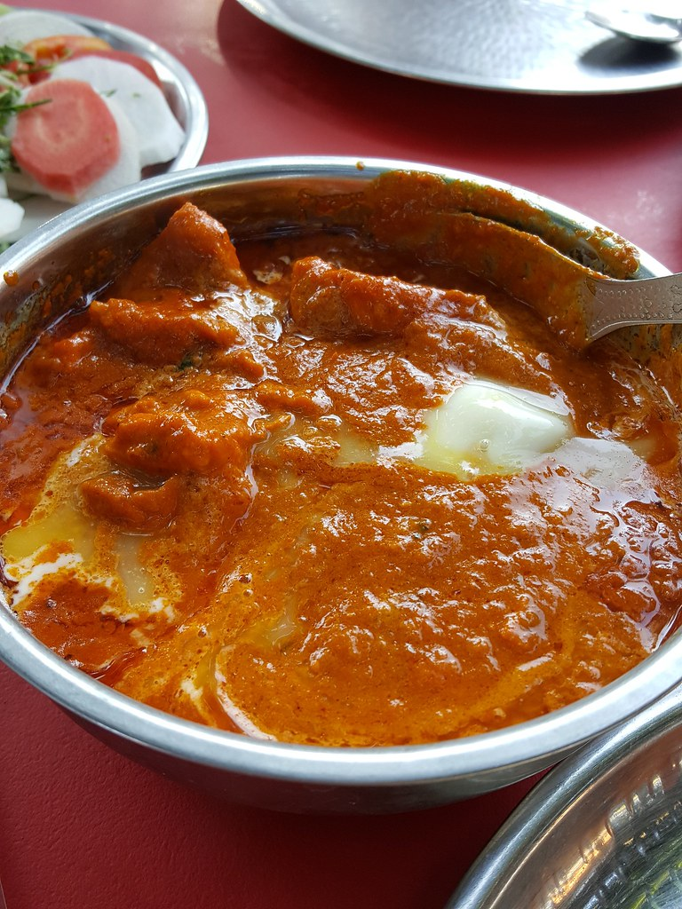

Butter Chicken

Description
Butter Chicken is a delicious and creamy Indian dish made with tender chicken pieces cooked in a rich tomato-based sauce with butter and spices.
Ingredients
- 1 lb chicken breast, cubed
- 2 tbsp butter
- 1 cup tomato sauce
- 1/2 cup heavy cream
- 1 tsp garam masala
- 1/2 tsp cumin
- 1/2 tsp coriander
- 1/4 tsp turmeric
- Salt to taste
Instructions
- In a large skillet, melt the butter and add the chicken pieces.
- Cook until the chicken is no longer pink.
- Add the tomato sauce and spices.
- Simmer for 10 minutes or until the sauce has thickened.
- Stir in the heavy cream and cook for another 5 minutes.
- Serve hot with rice or naan bread.
Home